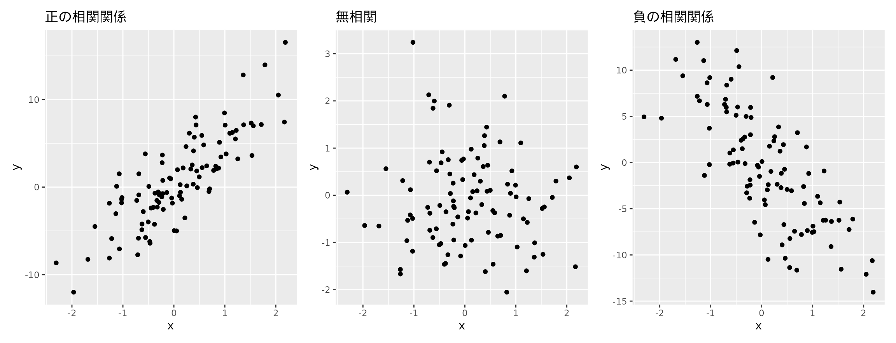

library(dplyr)
library(ggplot2)
library(patchwork)
library(palmerpenguins)4 相関: 2変数の関係を調べる
前章では、動物の体長や体重といった1つの変数を扱う方法を紹介しました。 データ分析では、1つ以上の変数を同時に扱い、それらの変数について意味や関係を明らかにする目的があります。 この章では、体長と体重、体重と分類群を一度に考える、つまり2変数の関係を見ていくことにします。 2つの変数の関係を表す概念としての相関の導入から、関係を表すための手法としての相関係数や散布図、クロス集計表について紹介します。 まずは関係という言葉自体について、データ分析の視点で扱われる2つの関係を説明します。
この章では次のRパッケージを利用します。 データセットとしてペンギンデータを引き続き利用します。
4.1 データ分析における2つの関係
データ分析における「関係」は複数の変数がともに変化する状態を指します。 関係を扱うときには次に説明する因果関係と相関関係の2種類があり、似たものでありながら異なる状態を示すもので注意が必要です。
本書の冒頭、データ分析の目的の中でみたように、 「ペンギンは翼の長さが大きい個体であれば口ばしの長さも大きくなる」はペンギンの体の部位の関係を示すものです。 こうした変数の間の関連性を相関関係といいます。 一方で、翼が長くなると口ばしが大きくなる、とするわけではありません。 逆も然りで、口ばしが大きくなれば翼が長くなるわけでもありません。 つまり、翼と口ばしの長さは、どちらかが大きくなればどちらかが大きくなることを説明するものではありません。 このような原因から結果を伴う状態を因果関係と言います。原因と結果の関係とも言えます。
ペンギンデータは野外に生息するペンギン個体の観測により得られたデータです。 各個体はここで観測していない年齢や食事の内容も異なるはずです。 その場合、翼や口ばしの長さに対する影響も当然変わると考えられます。 2つの変数の関連性は明らかですが、片方の変数が原因となり、もう片方の変数の値を決めている、 因果関係があるとは言えないのです。
因果関係を明らかにするのは容易ではありません。 よくある例として、因果関係がないのに、観測されない要因により因果関係があるかのように推測される2変数の関係に擬似相関があります。
擬似相関の例として有名な話があります。 ある街でのアイスクリームの売り上げが最も高い時期には、熱中症の搬送者数も最も多いことが指摘されました。 この時、アイスクリームの売り上げ増が熱中症の原因（あるいは結果）であると主張されましたが、 アイスクリームの売り上げや熱中症の増加も実際には、気温の高さが原因となっています。 気温について無視し、2つの変数の関係を議論すること、特に因果関係の有無を判断することは危険です。 熱中症患者の増加を抑えるために、アイスクリームの販売を規制するなどの誤った対策が取られてしまう恐れがあります。 気温について考慮せずに分析を進めてしまうと、見せかけの因果関係を発生させてしまいます。 ここでの気温のような観測されていない変数を潜在変数といいます。
4.2 相関: 2つの変数の間の関係
2つの量的変数の関係性を明らかにするために、相関という考え方を導入します。 ペンギンデータでは翼と口ばしの長さの関係を見ました。 これらの変数のように、互いの値が増えれば片方も増えるという傾向を示す関係を正の相関関係といいます。 一方、片方の変数の値が増えたときにもう片方の値が減少する場合、負の相関関係があるといいます。 この2つの関係に加えて、相関にはもう一つの関係があります。 それは変数の間に関係が見られない状態です。このことを無相関と呼びます。
変数間の相関関係はグラフ上に表現すると傾向を掴みやすくなります。 2変数のデータの関係を表現するグラフとして散布図が利用できます。 散布図は対となる量的変数について、それぞれグラフの縦軸（y軸）と横軸（x軸）からなる平面上に値を投影します。 ある変数の値が2であるとき、もう片方の変数の値が3であればグラフの座標は\((2,3)\)となり、そこに点が打たれることになります。
ペンギンデータの翼の長さと口ばしの長さの関係を散布図で表してみましょう(図 1.1) 1。 まずはデータの一部を確認します。
penguins |>
select(flipper_length_mm, bill_length_mm) |>
slice_head(n = 10)| flipper_length_mm | bill_length_mm |
|---|---|
| 181 | 39.1 |
| 186 | 39.5 |
| 195 | 40.3 |
| NA | NA |
| 193 | 36.7 |
| 190 | 39.3 |
| 181 | 38.9 |
| 195 | 39.2 |
| 193 | 34.1 |
| 190 | 42.0 |
一見すると傾向が掴みにくい2変数の関係もグラフに表すことで関係を捉えやすくなります。 散布図で横軸に示す口ばしの長さも、縦軸に示す翼の長さもいずれも値が大きいほど、もう片方の値も大きいことがわかります。
散布図を用いて相関関係を整理してみましょう。 図 4.1 に相関関係を表わす3つの状態を示しました。 散布図の特徴として、縦軸と横軸に表示する変数を入れ替えた場合でも同様の相関関係を見ることができます。
set.seed(123)
df_corr <-
tibble::tibble(
x = rnorm(100),
y = rnorm(100),
y_positive = 5 * x + rnorm(100, sd = 3),
y_negative = -5 * x + rnorm(100, sd = 4))
p1 <-
df_corr |>
ggplot(aes(x, y_positive)) +
geom_point() +
ylab("y") +
labs(title = "正の相関関係")
p2 <-
df_corr |>
ggplot(aes(x, y)) +
geom_point() +
labs(title = "無相関")
p3 <-
df_corr |>
ggplot(aes(x, y_negative)) +
geom_point() +
ylab("y") +
labs(title = "負の相関関係")
p1 + p2 + p3 +
plot_layout(ncol = 3)
4.3 2つの変数の関係を数値的に評価する
散布図によって、2つの変数の関係がありそうなのかなさそうなのか、おおよその傾向をつかむことができます。 しかし客観的に関係を評価するためには別の観点でデータを見る必要があります。 数値によって関係の強さを評価する方法として、共分散や相関係数があります。 これらの指標は、ある変数の値が変わったとき、もう片方の変数の値はどう変わるかを数値的に表現します。
4.3.1 共分散
2つの変数の関係を数値的に評価するとき、散布図に表示したように扱う変数を\(x\)と\(y\)の関係として見ていくことになります。 2つの変数の組を\((x_1, y_1), ... (x_n, y_n)\)、これは、一つ目の\(x\)変数の値、一つ目の\(y\)変数の値から、データに含まれる数までの\(x\)変数の値、データに含まれる数(\(n\)と表します)までの\(y\)変数の値を一つずつ見ることと同じ意味としたとき、共分散\(Cov_{xy}\)は次のように計算できます2。
\[ Cov_{xy} = \frac{1}{n} \sum_{i=1}^{n}(x_i - \bar{x})(y_i - \bar{y}) \]
難しそうな記号\(\sum\)（シグマ、日本語では総和と読みます。）が出てきましたが、一つずつ進めていきましょう。 ここで出てきた\(\bar{x},\bar{y}\)は\(x,y\)の平均値を表します。 \((x_i - \bar{x})\)ということは、\(i\)番目の\(x\)変数の値と\(x\)の平均値との差、すなわち偏差を求めることになります。 これは\(x\)だけでなく\((y_i - \bar{y})\)とあるように\(y\)についても同様です。 \(x\)変数と\(y\)変数について偏差を求めたら、それを掛け合わせます。
さて先ほど\(i\)番目の値について偏差を求めると言いましたが、 これは具体的に何番目の数値を示しているのでしょうか。 数学では、\(x\)についてのすべての値を足すときに\(x_1 + x_2 + ... + x_n\)と書けますが、これを簡略化したものとして \(\sum\)を用います。 \(\sum\)には上下に添字がつくことがあり、下の部分はどこから始めてということを意味する記号、上の部分にはどこまでかを示す記号を付け加えます。 そして\(\sum\)の右側には足し合わされる内容を記述します。 このことを理解して先ほどの共分散の計算式に戻ります。
共分散の式では、偏差の計算を行う際に\(i\)が使われています。 また\(\sum_{i=1}^{n}\)を言語化すると「1から始めて\(n\)まで足す」となります。 つまり偏差を変数\(x\)、\(y\)のすべてのデータに対して求めて掛け合わせた値を足すことになります。 最後にデータの数\(n\)で割ることで共分散が計算されます。
実際に値を見ながら計算を行いましょう。 ここでは単純にデータのすべてではなく2つのデータまでで共分散を求める、ということをやってみます。
# ペンギンデータから2件分を取り出して共分散を求めます
df <-
penguins |>
slice_head(n = 2) |>
select(flipper_length_mm, bill_length_mm)
df| flipper_length_mm | bill_length_mm |
|---|---|
| 181 | 39.1 |
| 186 | 39.5 |
# 平均、偏差を求めます
df <-
df |>
mutate(across(everything(),.fns = mean, .names = "{.col}_mean")) |>
rowwise() |>
mutate(flipper_length_deviation = flipper_length_mm - flipper_length_mm_mean,
bill_length_deviation = bill_length_mm - bill_length_mm_mean)
df| flipper_length_mm | bill_length_mm | flipper_length_mm_mean | bill_length_mm_mean | flipper_length_deviation | bill_length_deviation |
|---|---|---|---|---|---|
| 181 | 39.1 | 183.5 | 39.3 | -2.5 | -0.2 |
| 186 | 39.5 | 183.5 | 39.3 | 2.5 | 0.2 |
この値を式に当てはめます。\(n\)を2として置き換えます。
\[ Cov_{xy} = \frac{1}{2} \sum_{i=1}^{2}(x_i - \bar{x})(y_i - \bar{y}) \\ =\frac{1}{2} ( (181-183.5)(39.1-39.3)+(186-183.5)(39.5-39.3)) \\ =0.5 \]
となります。Rでも同じ計算を実行します。
df |>
transmute(deviation_cross = flipper_length_deviation * bill_length_deviation) |>
ungroup() |>
pull(deviation_cross) |>
sum() / nrow(df)[1] 0.5先ほどの共分散の算出では、最終的にデータの件数\(n\)によって割りました。 しかしRの標準的な偏差を求める関数cov()は\(n-1\)で割る処理を行います。 この方法で求めれらる共分散は不偏共分散と呼ばれるものです。 得られたデータには偏りがあることを想定し、その偏りを除外する目的で1が引かれます。 話が難しくなりますので、これ以上の説明は参考文献に譲ります。
# Rでは n -1 で割る不偏共分散が計算される
cov(df$flipper_length_mm, df$bill_length_mm)[1] 1# nで割る共分散を知りたい場合
cov(df$flipper_length_mm, df$bill_length_mm) * (nrow(df)-1) / nrow(df)[1] 0.5共分散と散布図の関係は、共分散の値が正のときには右上がりの散布図、共分散が負の値であれば散布図は右下がりとなります。 また散布図の中でデータがまんべんなく散らばっている場合、共分散は0に近い値となります。
共分散は値が大きいほど2変数の関係が強いことを示します。しかし共分散の短所は変数の単位に依存して値が変わることです。
単位の影響の例として、ミリメートル(mm)で記録されるペンギンデータの翼とくちばしの長さについて、 センチメートル(cm)に単位を変換した場合に共分散がどのように変化するのかを示します。 はじめに元のミリメートルでの共分散の値は次のようになります。
df_mm <-
penguins |>
select(flipper_length_mm, bill_length_mm) |>
purrr::set_names(c("flipper_length", "bill_length"))
cov(df_mm$flipper_length, df_mm$bill_length, use = "complete.obs")[1] 50.37577続いて測定単位をセンチメートルに変換した変数で共分散を求めてみます。
df_cm <-
df_mm |>
transmute(across(everything(), .fns = ~ .x / 10))
cov(df_cm$flipper_length, df_cm$bill_length, use = "complete.obs")[1] 0.50375772つの変数の値の関係が変わった訳ではないのに、ミリメートルのときの共分散よりも小さな値になってしまいました。 これでは変数の関係を正しく評価できません。 そこでこの単位依存の問題を修正した尺度として相関係数が登場します。
4.3.2 相関係数
共分散の単位依存の性質は、共分散を各変数の標準偏差の積で割ることで解消できます。 これを相関係数と呼びます。 相関係数(\(r\))は次の式で定義されます。
\[ r = \frac{Cov_{xy}}{\sqrt{\frac{1}{n}\sum_{i=i}^{n}{(x_i - \bar{x})^2}} \sqrt{\frac{1}{n}\sum_{i=i}^{n}{(y_i - \bar{y})^2}}} \]
相関係数は2つの変数の間の直線的な関係の強さを評価する指標です。 -1以上から1以下の値をとり、変数の関係が強いほど、散布図にしたときに直線関係に近いものほど、絶対値が1に近づきます。
相関係数にはいくつかの種類があり、中でもピアソンの積率相関係数が最も頻繁に利用されます3。 本書でも、相関係数といった時にはピアソンの積率相関係数を指して使います。
相関係数の注意点
相関係数はあくまでも変数の関係が直線関係にあることを仮定しているよ。 だから2変数間の関係が直線的でないときは適切な計算が行えないんだ。
また、相関係数は外れ値の影響を受けやすいよ。 外れ値とはデータに含まれる極端に小さい・大きい値のことだよ。 平均値が外れ値の影響を受けやすいということや、箱ヒゲ図を描画した際にも外れ値は他のデータと区別して表現していたことを思い出してね。 外れ値はデータ全体の傾向を大きく左右する影響があるから注意が必要なんだ。
Rでは相関係数の算出をcor()関数によって行います。 共分散の値を求めたとき同様、ペンギンデータの翼の長さとくちばしの長さについて相関係数を調べることにします。
cor(df_mm$flipper_length, df_mm$bill_length, use = "complete.obs")[1] 0.6561813この値は正の値であるので、正の相関であることがわかります。 一方で変数の関係の強さとしてはどの程度でしょうか。 相関係数の判断基準として 表 4.1 が一般的に使われています。 0.6561813は「やや強い相関がある」と言えることがわかりました。
コードを表示
tibble::tribble(
~相関係数, ~相関の強さ,
"\u00b10.7以上", "とても強い",
"\u00b10.4~0.7", "やや強い",
"\u00b10.2~0.4", "弱い",
"\u00b10.2以下", "ほとんどなし")| 相関係数 | 相関の強さ |
|---|---|
| ±0.7以上 | とても強い |
| ±0.4~0.7 | やや強い |
| ±0.2~0.4 | 弱い |
| ±0.2以下 | ほとんどなし |
続いて、相関係数が共分散の欠点を改善した点を確認しましょう。 共分散で求めたとき同様にペンギンデータの測定単位をセンチメートルに変換した2つのデータを用いて、測定単位の違いが相関係数に与える影響を調べてみます。
cor(df_cm$flipper_length, df_cm$bill_length, use = "complete.obs")[1] 0.6561813相関係数では共分散とは異なり、測定単位の影響を受けない点が確認できました。 また、相関係数は標準化と呼ばれる処理を行った場合でもその影響を受けません。 このことから相関係数は標準化された値どうしの共分散とも考えられます。
# 相関係数はデータの測定単位や標準化の有無に依存しない
cor(scale(df_mm$flipper_length), scale(df_mm$bill_length), use = "complete.obs") [,1]
[1,] 0.6561813cor(scale(df_cm$flipper_length), scale(df_cm$bill_length), use = "complete.obs") [,1]
[1,] 0.6561813最後に繰り返しになりますが、相関係数は関係の強さを示す指標であって変数間の因果関係を示すものではありません。 どんな変数間であろうと相関係数は必ず出る点にも注意が必要です。 2つの変数に対する関係として、片方の変数からもう片方の変数を説明することには回帰分析を実行する必要があります。
4.4 クロス集計表
質的変数の変数間の関係を調べる方法を紹介します。 ペンギンデータには、種の名前 species、生育する島の名前 island、性別 sex の3つの質的変数があります。 これらの質的変数間の関係を調べるためにクロス集計表を用います。
クロス集計表では、対象の質的変数に含まれる件数をカウントし、表にまとめます。 表の行・列には変数の項目が並びます。 表 4.2 にペンギンデータにおける島ごとの種数を整理しました。
library(dplyr)
library(palmerpenguins)
penguins |>
count(species, island) |>
tidyr::pivot_wider(names_from = island, values_from = n, values_fill = 0)| species | Biscoe | Dream | Torgersen |
|---|---|---|---|
| Adelie | 44 | 56 | 52 |
| Chinstrap | 0 | 68 | 0 |
| Gentoo | 124 | 0 | 0 |
この表を見るだけで次の事柄がわかります。
- アデリーペンギン Adelie は調査地のどの島にも生育する
- ヒゲペンギン Chinstrap はDream島にだけ生育する
- ジェンツーペンギン Gentoo はBiscoe島に多いがDreamやTorgersenには生育しない
クロス集計表の利用によって1変数を調べただけではわからなかった質的変数の特徴を知ることができました。
クロス集計表によって、データの比較が行いやすくなりましたが、 その差は本当にデータの性質を反映しているのでしょうか。 統計的な手法を用いることで、このような差の有無を判断できるようになります。 「なんとなく差がある」結果を統計的仮説検定を行うことで客観的に評価できるようになります。
4.5 まとめと課題
- 相関の例を探してみよう。擬似相関や因果関係とは違うか考えてみよう。
4.6 参考文献・URL
- (編著 2012)
- (日本統計学会 2020)
- (嶋田正和 2017)
- (阿部真人 2021)
- (著, 監訳, と 訳 2020)